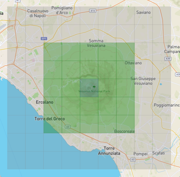

Basic Post-Processing Demo

This Small Project demonstrates my understanding of Unity's Post-Processing tools. we were tasked to make terrain with some basic effects around it, this image here shows what I had done to create the terrain. I used the terrain tools to sculpt hills and valleys, then I textured it using various textures like grass, rock and dirt. also being versed in the Maps like Normal Base and height maps helped my understanding of Game Dev. It was all made in Unity Universal 3D Pipeline URP.
I’ve also learned how to use colour grading and colour curves to enhance the atmosphere of different areas in the game. For example, when the player enters a water zone like in the video I trigger a post‑processing effect that adds a subtle vignette and shifts the colour balance toward blue. This creates a clear visual cue that the player is underwater and helps reinforce the overall mood and immersion.


We were given height maps and textures to work with in class, but something I found especially interesting was the ability to pull real‑world height maps from anywhere on the planet. For the mountain in my project, I used a site called terraining.com, which lets you download terrain data from actual locations. I chose Mount Vesuvius in Italy and then exaggerated the height values to make the peak more dramatic and visually striking.
Video
this short clip is a demonstration of the post-processing effects I applied to the terrain and underwater area along with some nice depth of field affects and colour grading to enhance the visual apeal
I learned alot form this project, especially in terms of Visuals and how it can change a scene from being empty to feeling alive.
Mechanics
I used the built in unity terrain tool to place trees and grass onto the terrain which utilize LOD and billboarding to reduce the performance impact if there were too many trees in the Scene.
the textures all have maps and even go through ambient occlusion to give them more depth and realism.
I also changed the skybox as i wanted to learn how to do that for future projects.